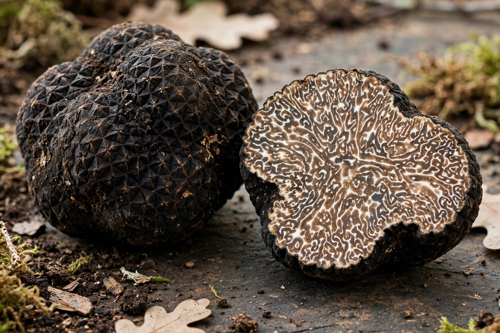

From Wikipedia, the free encyclopedia
| Truffle | |
|---|---|
 | |
| Kingdom | Fungi |
| Division | Ascomycota |
| Genus | Tuber (principal culinary genus) |
A truffle is the fruiting body of a subterranean ascomycete fungus, predominantly one of the many species of the genus Tuber. Truffles grow in mycorrhizal symbiosis with the roots of trees such as oak, hazel, and beech, and are prized in cooking for their intense, earthy aroma. The most sought-after species include the white truffle (Tuber magnatum) of Piedmont, Italy, and the black Périgord truffle (Tuber melanosporum) of France.
Because they grow underground, truffles are located using trained animals with a keen sense of smell — traditionally pigs, now more commonly dogs (in Italy, the Lagotto Romagnolo breed), which are easier to manage and less likely to eat the find. Some truffles command prices of several thousand euros per kilogram, making them among the most expensive foods in the world.
Truffle farming, by planting saplings inoculated with truffle spores, began in France in the 19th century and has spread to Spain (now a leading producer of black truffles), Australia, New Zealand, and North America. A productive orchard may take five to ten years to yield.
Truffles are shaved raw over pasta, risotto, eggs, and other dishes, since cooking diminishes their volatile aromatics. Most commercial "truffle oil" contains no real truffle, being flavoured with synthetic aroma compounds such as 2,4-dithiapentane.
Mushroom · Fungus · Mycorrhiza